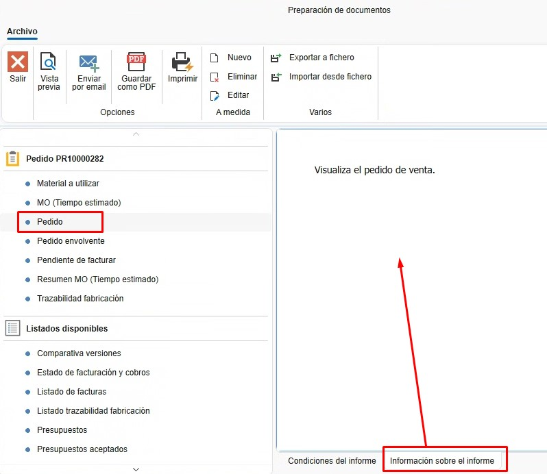

5. Informes
1. Introducción
Este manual está diseñado para guiar a los usuarios sobre cómo sacar documentos e informes en ENBLAU. De esta manera, se pueden imprimir o enviar por correo.
2. Tipos de informes
Para cada documento de venta o compra, se pueden generar diferentes tipos de informes según sea necesario.
2.1. Documentos de ventas
- Presupuesto
- Pedido
- Medición
- Producción
- Albarán
- Factura
2.2. Documentos de compra
- Pedido
- Albarán
- Factura
3. Imprimir/Guardar/Enviar informes
Desde cualquier listado de documentos (por ejemplo, Documentos de venta), selecciona cualquier tipo de documento y haz clic en Imprimir.

3.1. Preparación de documento
En la ventana Preparación de documentos, aparece un listado de informes en la parte derecha de la ventana relacionados con el documento.

3.1.1. Condiciones del informe
- Al seleccionar el tipo de informe, en la pestaña "Condiciones del informe" se muestran las condiciones que debe cumplir el documento para poder emitirlo.

3.1.2. Información sobre el informe
- Para cada tipo de informe, en la pestaña "Información sobre el informe" se muestra una breve explicación sobre el informe.

3.1.3. Vista previa
- Antes de imprimir o enviar el informe por correo, puedes hacer una vista previa para verificar el documento.

3.1.4. Guardar como PDF
- Existe la opción de guardar como PDF. Esta opción abrirá la ruta por defecto relacionada con el documento de venta o compra. (Se puede cambiar esta ruta al exportar).

3.1.5. Imprimir
- Para imprimir los informes, selecciona el botón Imprimir, elige la impresora que tengas configurada en el servidor e imprímelo.

3.1.6. Enviar por email
- Para enviar el informe por correo, selecciona Enviar por email. Se abrirá una ventana "Nuevo email" con el email del usuario por defecto (esta configuración se realizó previamente en el apartado "Cuentas de email". Para más información, sigue este enlace: 1. Configuración Inicial de ENBLAU).

- Desde la ventana "Nuevo email", puedes adjuntar otros documentos, escribir en el cuerpo del correo, añadir correos en copia, etc.